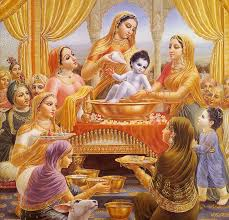

"जन्माष्टमी, जिसे कृष्ण जन्माष्टमी भी कहा जाता है, एक प्रमुख हिंदू त्योहार है जो भगवान कृष्ण के जन्म का उत्सव मनाता है। यह त्योहार आमतौर पर अगस्त के अंत या सितंबर की शुरुआत में, हिंदू चंद्र कैलेंडर के भाद्रपद मास की अंधेरी पखवाड़े की आठवीं रात (अष्टमी) को मनाया जाता है।"
- जन्माष्टमी का महत्व
- धार्मिक महत्व: "कृष्ण को हिंदू धर्म में सर्वोच्च देवता माना जाता है, और उनके जन्म को बड़े उत्साह के साथ मनाया जाता है। उन्हें दिव्य नायक और प्रेम, ज्ञान, और धर्म (सच्चाई) का प्रतीक माना जाता है।"
- "उत्सव"
- अनुष्ठान: "भक्त उपवासी रहते हैं, भजन गाते हैं, और भगवद गीता तथा भागवतम पुराण जैसे ग्रंथों का पाठ करते हैं, जो कृष्ण के जीवन और उपदेशों को वर्णित करते हैं।"
- "मध्यरात्रि की पूजा": "कृष्ण का जन्म रात के मध्य में हुआ माना जाता है, इसलिए उत्सव रात के समय चरम पर पहुंचता है, जिसमें पूजा, प्रार्थनाएं और कृष्ण के जीवन तथा चमत्कारों का मंचन होता है।"
- "दही हांडी": "कुछ क्षेत्रों, विशेषकर महाराष्ट्र में, एक लोकप्रिय परंपरा है जिसमें लोग मानव पिरामिड बनाते हैं और ऊंचाई पर लटके हुए दही के बर्तन को तोड़ते हैं। यह कृष्ण के मक्खन के प्रति प्रेम और उनकी खेली स्वभाव का प्रतीक है।"
- सजावट: "मंदिरों और घरों को अक्सर फूलों, रोशनी, और कृष्ण की तस्वीरों से सजाया जाता है। भक्त कृष्ण और राधा के रूप में भी सजते हैं और कृष्ण के जीवन के नाटकीय पुनरावलोकन का प्रदर्शन करते हैं।"
- ऐतिहासिक और सांस्कृतिक संदर्भ

- पौराणिक कथा: "कृष्ण मथुरा में राजा वसुदेव और रानी देवकी के कारावास में जन्मे, जिनकी जेल में बंदी बनाने वाले तानाशाह राजा कंस थे। उनके जन्म के बारे में भविष्यवाणी की गई थी कि यह कंस के शासन का अंत लाएगा।"
- सांस्कृतिक प्रभाव:"यह त्योहार भारत और दुनिया के विभिन्न क्षेत्रों में विभिन्न परंपराओं के साथ मनाया जाता है, जो कृष्ण के जीवन और उपदेशों को मानने के विविध तरीकों को दर्शाते हैं।"
- वैश्विक उत्सव
- भारत : "जन्माष्टमी भारत भर में बड़े धूमधाम से मनाई जाती है, जिसमें मंदिरों में विशाल भीड़ और जीवंत सामुदायिक कार्यक्रम होते हैं।"
- प्रवासी समुदाय: "दुनिया भर में हिंदू समुदाय भी जन्माष्टमी मनाते हैं, अक्सर मंदिरों और सामुदायिक केंद्रों में सांस्कृतिक कार्यक्रम और धार्मिक समारोह आयोजित करते हैं।"